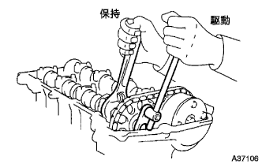
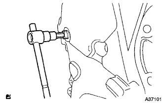
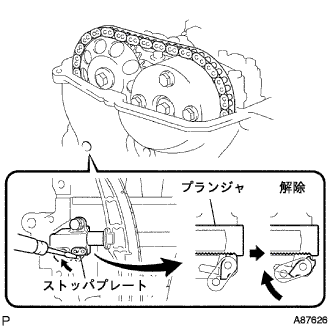
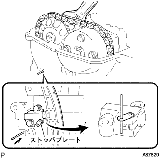
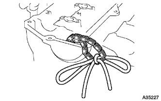

カムシャフト 取り付け |
| 1. カムシャフトタイミング ギヤASSY取り付け |
 |
カムシャフトのストレートピンに対して、カムシャフトタイミングギヤASSYのキー溝を図のようにずらした状態で勘合させる。
軽くカムシャフトタイミングギヤASSYを押しながら図の矢印の方向(左回転)に回転させ、キー構とストレートピンが一致したところでさらに押し込む。
カムシャフトタイミングギヤASSYとカムシャフトのフランジ部とのすき間が無い事を確認する。
カムシャフトタイミングギヤが回転しないように注意しながらフランジボルトを締め付ける。
締め付け後、カムシャフトタイミングギヤASSYを遅角方向(右回転)に回転させ動くことを確認し、可動端でカムシャフトタイミングギヤASSYがロックすることを確認する。
| 2. カムシャフト取り付け |
 |
カムシャフトカム部およびシリンダヘッドジヤーナル部にエンジンオイルを塗布する。
図のようにチェーンを手で保持し、チェーンのペイントマークがカムシャフトタイミングギヤASSYのタイミングマークと一致するように、カムシャフトおよびカムシャフトタイミングギヤASSYを取り付ける。
 |
ベアリングキャップNo.2のフロントマークおよび数字を確認し、図の順序で数回に分けて均等に締め付ける。
| 3. カムシャフト NO.2取り付け |
 |
図のようにチェーンを手で保持し、チェーンのペイントマークがカムシャフトタイミングギヤのタイミングマークと一致するように、カムシャフトNo.2およびカムシャフトタイミングギヤを取り付ける。
カムシャフトNo.2のノックピンとカムシャフトタイミングギヤのピン溝を合わせる。
 |
フランジボルトで仮付けする．
 |
ベアリングキャップNo.1、No.2のフロントマークおよび数字を確認し、図の順序で合う迂回に分けて均等に締め付ける。
|  |
カムシャフトNo.2のサービス用六角部をモンキーレンチで保持し、フランジボルトを締め付ける。
チェーンテンショナからφ3mmの棒または六角棒レンチを抜きとる。
 |
クランクシャフトダンパを正回転させ、クランクシャフトダンパの切り欠きを0°マークに合わせる。
各々のあわせマークが一致していることを確認する。
チエーンカバーサービスホールスクリユプラグのボルト先端より、2-3ねじ山にアドヘシブ1324を塗布する。
|  |
ソケットヘキサゴンレンチ8を使用して、チエーンカバーサービスホールスクリユプラグを取り付ける。
| 4. バルブクリアランス点検 |
|
No.1シリンダ圧縮上死点セット
クランクシャフトダンパを正回転させ、タイミングマーク(切り欠き)をチェーンカバー0°の位置に合わせる。
図の位置にカムシヤフトタイミングギヤのタイミングマークがあることを確認する。
図の場所のバルブクリアランスを点検する。
シックネスゲージを使用して、バルブリフタとカムシヤフト間のクリアランスを測定する。
クランクシャフトを正回転方向に一回転させ、No.4シリンダを圧縮上死点にする。
 |
図の箇所のバルブクリアランスを点検する。
シックネスゲージを使用して、バルブリフタとカムシヤフト間のクリアランスを測定する。
| 5. バルブクリアランス調整 |
 |
|
No.1シリンダ圧縮上死点セット
クランクシヤフトダンパを正回転させ、タイミングマーク(切り欠き)をチェーンカバー0°の位置に合わせる。
このとき、カムシヤフトタイミングギヤのタイミングマークが図の位置にあることを確認する。
ソケットヘキサゴンレンチ8を使用して、チエーンカバーサービスホールスクリユプラグを取りはずす。
|  |
マイナスドライバーを使用して、チェーンテンショナサービスホールよりテンショナのストッパプレートを上げた状態で保持する。
 |
チェーンテンショナのストッパプレートを上げた状態からモンキーレンチを使用して、カムシャフトNo.2のサービス用六角部を少し右回転させ、チェーンテンショナのプランジャが押された状態にする。
 |
モンキーレンチを保持し、プランジャが奥に入った状態からマイナスドライバーを取りはずす。
|  |
チェーンテンショナのストッパプレートが下にさがり、ロックされた状態からストッパプレートの穴にφ3mmの棒または六角棒レンチを差し込む。
φ3mmの棒または六角棒レンチが抜け落ちないようにテープなどで固定しておく。
カムシヤフトNo.2のサービス用六角部をモンキーレンチで保持し、カムシヤフトタイミングギヤ取り付けボルトを緩める。
 |
図の順序でカムシヤフトベアリングキヤツプNo.1およびNo.2を取りはずす。
|
カムシヤフトNo.2を少し浮かした状態で、フランジボルトをはずし、カムシヤフトNo.2およびカムシヤフトタイミングギヤを取りはずす。
 |
図の順序でカムシヤフトベアリングキヤツプNo.2を取りはずす。
チェーンを手で保持し、カムシヤフトを取りはずす。
|  |
チェーンをロープまた針金などで吊っておく。
バルブリフタを取りはずす。
 |
マイクロメーターを使用して、取りはずしたバルブリフタの厚さを測定する。
バルブクリアランスが基準値になるようにバルブリフタの厚さを算出する。
| A | 選択したバルブリフタ |
| B | 取りはずしたバルブリフタの厚さ |
| C | 測定したバルブクリアランス |
バルブリフタを選択する。
選択したバルブリフタを取り付ける。
カムシヤフト部およびシリンダヘツドジヤーナル部にエンジンオイルを塗布する。
 |
図のようにチェーンを手で保持し、チェーンのペイントマークがカムシヤフトタイミングギアASSYのタイミングマークと一致するように、カムシヤフトおよびカムシヤフトタイミングギヤASSYを取り付ける。
 |
カムシヤフトベアリングキヤツプNo.2のフロントマークおよび数字を確認し、図の順序で数回に分けて均等に締め付ける。
 |
図のようにチェーンを手で保持し、チェーンのペイントマークがカムシヤフトタイミングギヤのタイミングマークと一致するように、カムシヤフトNo.2およびカムシヤフトタイミングギヤを取り付ける。
カムシヤフトNo.2のノックピンとカムシヤフトタイミングギヤのピン溝を合わせる。
|
フランジボルトを仮付けする。
|
カムシヤフトベアリングキヤツプNo.1、No.2のフロントマークおよび数字を確認し、図の順序で数回に分けて均等に締め付ける。
カムシヤフトNo.2のサービス用六角部をモンキーレンチで保持し、フランジボルトを締め付ける。
チエーンテンシヨナから六角棒レンチを抜き取る。
|
クランクシヤフトプーリを正回転させ、クランクシヤフトプーリの切り欠きを0°マークに合わせる。
各々の合わせマークが一致していることを確認する。
チエーンカバーサービスホールスクリユプラグのボルト先端より、2-3ねじ山にアドヘシブ1324を塗布する。
ソケットヘキサゴンレンチ8を使用して、チエーンカバーサービスホールスクリユプラグを取り付ける。
| 6. シリンダヘッド カバーSUB-ASSY取り付け |
 |
図の位置にシールパッキンブラックを塗布し、シリンダヘツドカバーを取り付ける。
 |
ボルト９本およびナット２個で、シリンダヘツドカバーを取り付ける。
図の順序で数回に分けてボルトおよびナットを締め付ける。
| 7. イグニッション コイル NO.1取り付け |
ボルトでイグニッションコイルを取り付ける。
コネクタを接続する。
| 8. ベンチレーション ホース取り付け |
ベンチレーションホースをベンチレーションホースクリップで取り付ける。
| 9. ベンチレーション ホース NO.2取り付け |
ベンチレーションホースNo.2をベンチレーションホースクリップNo.2で取り付ける。
| 10. シリンダヘッド カバー NO.2取り付け |
 |
ナットA２個を締め付け後、ナットB2個でシリンダヘツドカバーNo.2を取り付ける。
| 11. エンジンオイル漏れ点検 |
| 12. エンジンアンダ カバー RH取り付け |
スクリュー2個およびボルト2本で、エンジンアンダーカバーRHを取り付ける。
ナットを、締め付ける。